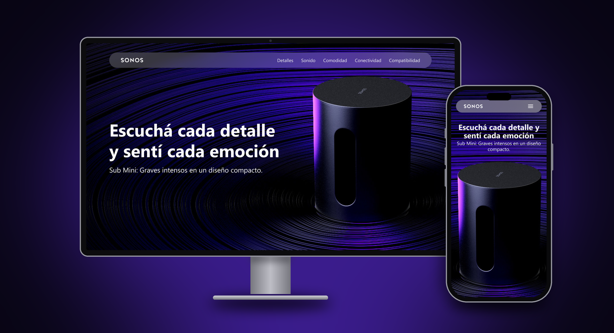

Benchmark
Página del producto
Para ver cómo Sonos presenta hoy el Sub Mini: qué información prioriza y en qué orden.
Caso 02 · Diseño web · UX/UI · Desarrollo front-end
Rediseño de la página de producto del Sub Mini de Sonos: una landing que cuenta el producto como una historia, de lo general a lo específico.

01 / El desafío
La consigna fue rediseñar la página real de un producto. Elegimos el Sub Mini, el subwoofer compacto de Sonos.
Una página de este tipo tiene que explicar algo técnico (woofers, frecuencias, voltaje) a alguien que, en el fondo, solo quiere saber si va a sonar mejor en su casa. También tiene que mostrar cómo se conecta con la app y con otros productos de la marca.
02 / Investigación
Benchmark
Para ver cómo Sonos presenta hoy el Sub Mini: qué información prioriza y en qué orden.
Benchmark
Para entender la navegación, el tono y cómo se relacionan los productos entre sí.
Benchmark
Para entender cómo se conecta el Sub Mini con el celular, una parte clave de la experiencia.
03 / La oportunidad
Las especificaciones dicen qué es el Sub Mini. Los beneficios dicen qué cambia en tu casa. La oportunidad estaba en ordenar la página para que cada sección respondiera una pregunta del usuario, en el orden en que se la hace.
Primero la emoción y los beneficios, después los datos técnicos para quien los busca.
Cada dato técnico explicado en función de lo que se escucha y se siente.
04 / La decisión clave
Ordenamos las secciones como un relato: empieza con el impacto, avanza hacia el detalle y termina en cómo usar el producto en el día a día.
Hero. La promesa: “Escuchá cada detalle y sentí cada emoción”.
Beneficios generales. Sonido envolvente, diseño, integración y arquitectura.
Cómo funciona. Los dos woofers internos y la tecnología Trueplay, explicados en lenguaje simple.
Especificaciones. Dimensiones, peso, voltaje, woofers y frecuencia, para quien quiere el dato exacto.
En tu espacio. Cómo se adapta a la casa y mejora la experiencia con TV, películas y juegos.
Conexión con la app. El Sub Mini y el celular, con acceso directo a App Store y Google Play.
Compatibilidad. Otros productos Sonos para armar el sistema de sonido.
El menú refleja el mismo recorrido: Detalles, Sonido, Comodidad, Conectividad y Compatibilidad.
05 / De la especificación al beneficio
| Especificación | Cómo lo contamos |
|---|---|
| Gabinete sellado | Neutraliza la distorsión y mejora los graves |
| Dos woofers internos | Graves de un subwoofer mucho más grande |
| Trueplay™ | Bajos ajustados a tu espacio |
| Diseño cilíndrico de 305 × 230 mm | Se adapta a cualquier rincón |
| Conexión Wi-Fi | Configuración rápida con otros productos Sonos |
06 / Diseño de interfaz
El fondo oscuro deja que el producto, iluminado, sea lo primero que se ve. Además remite a ver una película o escuchar música con las luces bajas, que es justamente el momento para el que está pensado el Sub Mini.
Después del diseño y el prototipo en Figma, desarrollamos el sitio en HTML, CSS y JavaScript, con navegación por secciones, carrusel de productos y botón para volver arriba.
07 / Resultado
El rediseño convirtió la página del Sub Mini en un recorrido narrativo: primero muestra por qué importa el producto, después cómo funciona y por último cómo integrarlo a la casa y al celular.
Contacto
Si tu equipo necesita simplificar procesos complejos, hablemos.